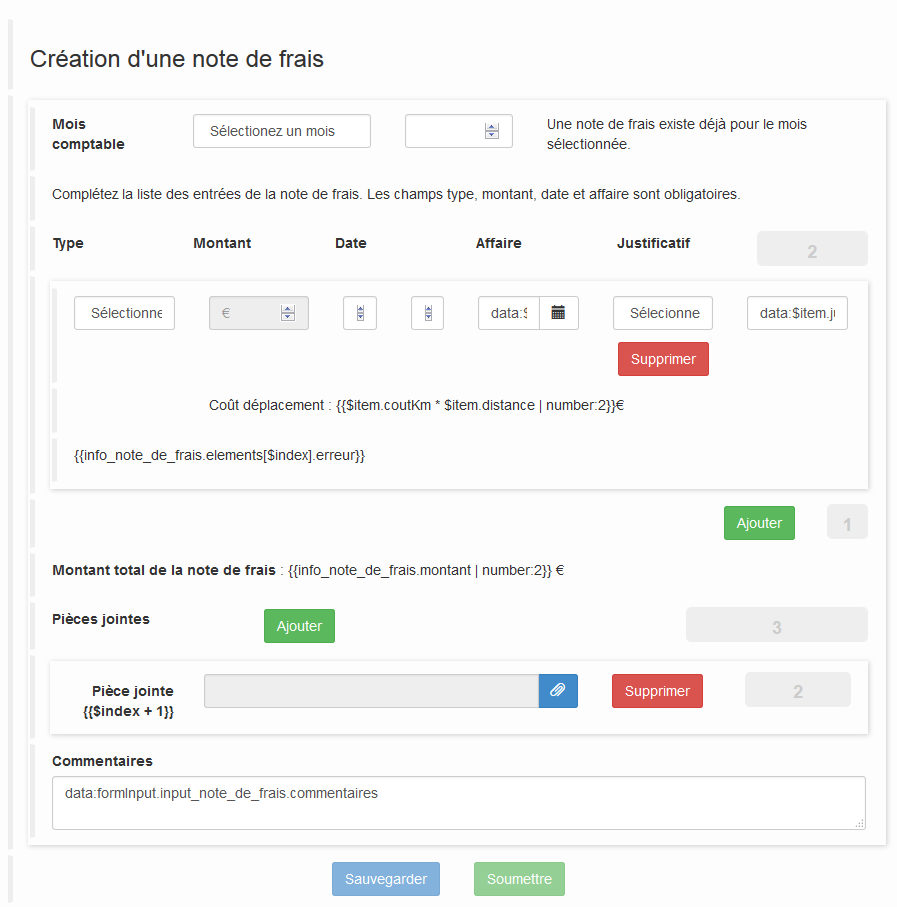
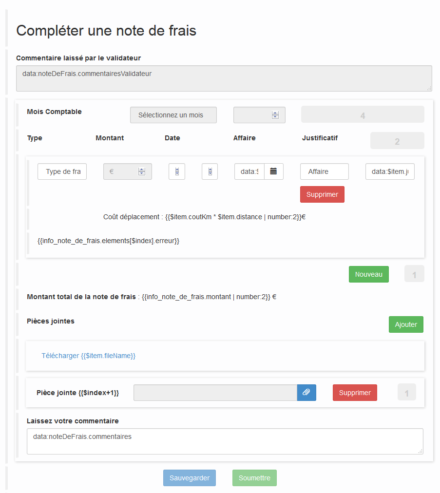
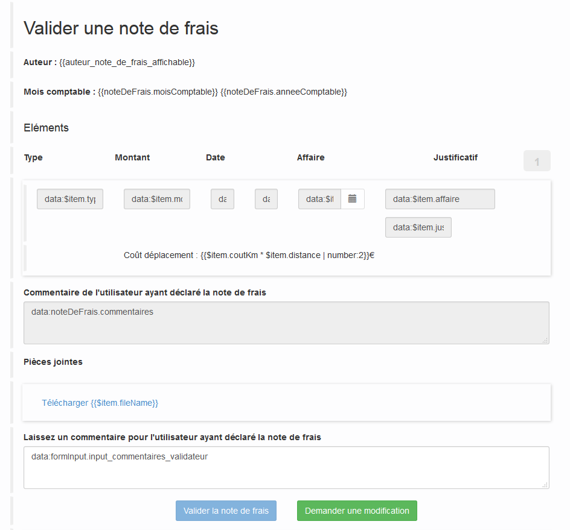
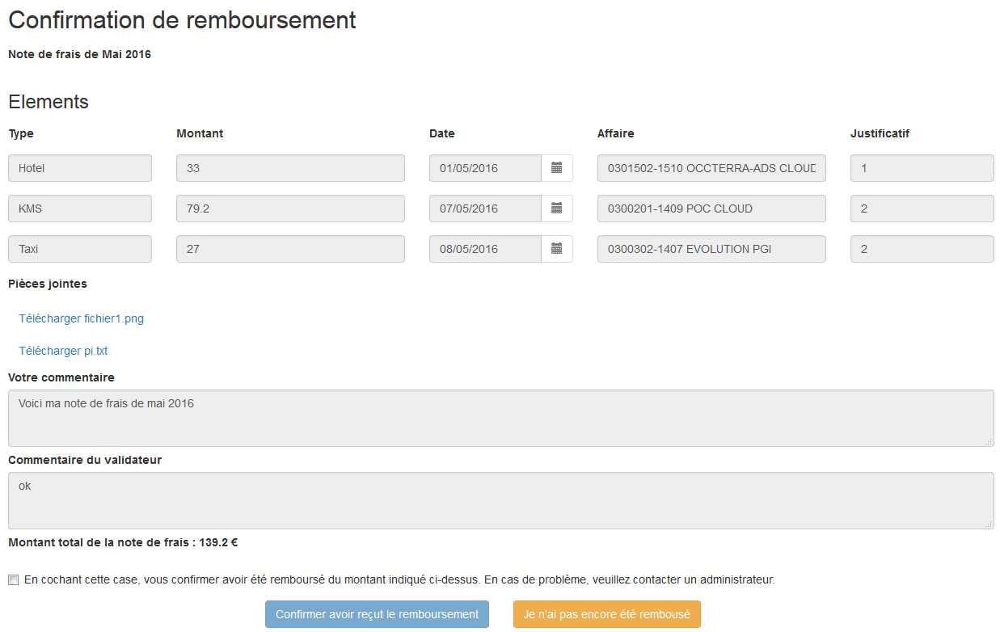
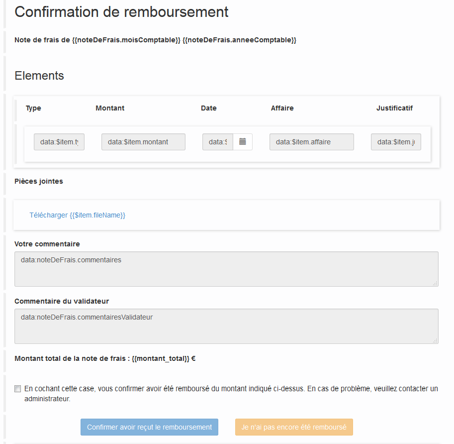

3
Processus
[proc]
3.1
Présentation du processus
[proc.presentation]
Ci-dessous une capture d'ecran du processus dans Bonita.

Le processus se découpe en plusieurs activités qui seront détaillées ci-après. D'une manière globale, le processus se déroule comme suit : l'utilisateur crée une note de frais et peut soit la sauvegarder soit la soumettre pour validation ; tant que la note de frais n'est pas complète, l'utilisateur peut la modifier ; lorsque la note de frais passe à l'étape de validation, le validateur peut l'accepter ou la refuser ; si le validateur refuse la note de frais, l'utilisateur doit la compléter/modifier jusqu'à ce que les deux utilisateurs soient d'accord ; une fois la note de frais validée, l'utilisateur clôt le processus en confirmant qu'il a bien reçu le montant indiqué.
3.2
Acteurs
[proc.acteurs]
Le développement d'un processus nécessite de définir un ensemble d'acteurs intervenant dans le processus. Trois acteurs seront utilisés dans le processus que nous décrivons :
- Employé : réprésente l'employé pouvant déclarer une note de frais
- Validateur : personne capable de valider une note de frais
- Comptabilité : acteur fictif, les tâches réalisées par cet acteur sont automatiques
Remarque : Pour le développement du processus, les acteurs ne seront pas définis et une même personne pourra à priori déclarer et valider des notes de frais. Une fois le processus mis en production, un tel comportement n'est pas envisageable. Il revient à l'administateur du portail Bonita BPM de définir les associations entre acteurs et utilisateurs.
3.3
Variables et documents
[proc.variables]
Cette section décrit l'ensemble des variables et documents utilisés lors de l'éxecution d'un cas du processus.
Remarque : on peut définir ces variables et documents dans Bonita en cliquant sur le diagramme du processus, puis sur l'onglet Données, puis Variables du pool / Documents.
| Nom | Type |
| note_de_frais | NoteDeFrais |
Remarque : on initialisera la variable note_de_frais à partir d'un script utilisant les données fournies par le formulaire d'instanciation décrit plus tard.
| Nom | Multiplicité | Initialisation |
| pieces_jointes | Multiple | Contrat |
3.4
Activités
[proc.activites]
Cette section décrit l'ensemble des activités du processus. Elle se décompose en quatres sous-parties: la création de la note de frais ; la modification d'une note de frais ; la validation de la note de frais ; et la clôture du cas par l'utilisateur l'ayant démarré.
3.4.1
Créer une note de frais
[proc.activites.creer]
Cette activité permet de démarrer un cas de processus de gestion des notes de frais. L'utilisateur peut y définir une note de frais et la soumettre à validation ou la sauvegarder pour la compléter plus tard.
3.4.1.1
Contrat
[proc.activites.creer.contrat]
Pour pouvoir démarrer le processus, il est nécessaire de fournir un minimum d'information. L'ensemble des ces informations est listé dans le contrat ci-dessous.
| Nom | Type | Multiple |
| form_note_de_frais_complete | BOOLEAN | |
| form_note_de_frais | COMPLEX | |
| moisComptable | TEXT | |
| anneeComptable | INTEGER | |
| elements | COMPLEX | oui |
| type | TEXT | |
| dateDepense | DATE | |
| affaire | INTEGER | |
| form_pieces_jointes | FILE | oui |
Remarque 1 : les informations notées obligatoires pour la création des objets métiers et non présentes dans le contrat sont calculées de manière programmatique ou ont des valeurs par défaut . Pour le champ montant, il est soit fourni via le formulaire, soit calculé à partir de distance et coutKm pour le type "KMS" ; il ne peut donc pas faire partie du contrat.
Remarque 2 : l'élément form_pieces_jointes est utilisé pour initialiser les documents du cas (cf. 3.3) ; il peut être vide s'il n'y a pas de pièce jointe.
3.4.1.2
Formulaire
[proc.activites.creer.formulaire]
Cette section décrit le formulaire permettant d'instancier le processus. Un visuel puis une description plus détaillée sont fournis.

Le formulaire permet à l'utilisateur d'entrer le mois comptable pour sa note de frais. Il
permet également d'ajouter un nombre arbitraire d'élément à la note de frais. L'utilisateur
doit préciser pour chaque élément de la note de frais la date et le montant ainsi que le type
de la dépense. Il doit également préciser quelle affaire a entrainé la dépense et peut s'il le
veut fournir une indication sur la preuve de la dépense.
L'utilisateur peut ajouter un nombre arbitraire de pièces jointes et peut entrer un commentaire
avant soit de sauvegarder sa note de frais - auquel cas il pourra la modifier plus tard - soit
de la soumettre à validation.
Voici une capture de la mise en place du formulaire dans l'outil UI-Designer de Bonita.

Les widgets permettant de choisir le type, de saisir un montant, de sélectionner une date, une affaire
et de rentrer un justificatif font tous 2 colonnes. Les boutons font également tous 2 colonnes.
Les deux widgets permettant de saisir une distance et un coût au kilomètre dans le cas d'un déplacement
en voiture font 1 colonne. Ces widgets sont cachés si le type de l'élément n'est pas "KMS".
Le widget permettant de saisir un montant est désactivé et caché si le type est "KMS".
Pour l'ensemble de ces widgets, le libellé est masqué.
La mention indiquant qu'une note de frais existe déjà est masqué et les boutons permettant de valider
le formulaire sont activés s'il n'existe pas de note de frais pour le mois sélectionné (variable
note_de_frais_existante).
var annee = $data.formInput.input_note_de_frais.anneeComptable;
var mois = $data.formInput.input_note_de_frais.moisComptable;
return RestApi.Bdm.hasNoteDeFrais(RestApi.Identity.getCurrentUserId(),
mois,
annee);
3.4.1.3
Initialisations
[proc.activites.creer.init]
L'initialisation de la variable métier note_de_frais se fait avec un script Groovy. Les différents champs de l'objet métier note_de_frais sont remplis avec les valeurs fournies par le formulaire ou sont calculés de manière programmatique.
import org.bonitasoft.engine.bpm.process.ProcessInstance;
import com.company.model.NoteDeFrais;
import com.company.model.ElementNoteDeFrais;
ProcessInstance processInstance = apiAccessor.getProcessAPI().getProcessInstance(processInstanceId);
NoteDeFrais note_de_frais = new NoteDeFrais();
note_de_frais.setEstComplete(form_note_de_frais_complete);
note_de_frais.setMoisComptable(form_note_de_frais.get("moisComptable"));
note_de_frais.setAnneeComptable(form_note_de_frais.get("anneeComptable"));
note_de_frais.setDateCreation(new Date());
note_de_frais.setUtilisateur(processInstance.getStartedBy());
note_de_frais.setCommentaires(form_note_de_frais.get("commentaires"));
note_de_frais.setCas(processInstanceId);
List<Map<String,Object>> input_elements = form_note_de_frais.get("elements");
List<ElementNoteDeFrais> elements = new ArrayList<ElementNoteDeFrais>();
for (Map<String,Object> input_entree : input_elements)
{
ElementNoteDeFrais entree = new ElementNoteDeFrais();
entree.setType(input_entree.get("type"));
entree.setDateDepense(input_entree.get("dateDepense"));
entree.setAffaire(input_entree.get("affaire"));
if(input_entree.containsKey("justificatif"))
{
entree.setJustificatif(input_entree.get("justificatif"));
}
if(entree.getType() == "KMS")
{
double cout_km = input_entree.get("coutKm");
double dist = input_entree.get("distance");
entree.setCoutKm(cout_km);
entree.setDistance(dist);
entree.setMontant(dist*cout_km);
}
else
{
entree.setMontant(input_entree.get("montant"));
}
elements.add(entree);
}
note_de_frais.setElements(elements);
return note_de_frais;
L'initialisation des documents pieces_jointes se fait à partir de la valeur form_pieces_jointes.
3.4.2
Compléter une note de frais
[proc.activites.completer]
Cette activité est la plus complexe car elle se présente sous deux formes différentes : l'utilisateur ayant sauvegardé une note de frais peut la compléter avant de la soumettre à validation ; l'utilisateur dont la note de frais a été refusée doit la modifier pour qu'elle puisse être revalidée.
Dans le premier cas, l'ensemble des champs doit être éditable et l'utilisateur peut à nouveau
sauvegarder sa note ou la soumettre.
Dans le second cas, les éléments de la note de frais déjà validés ne doivent plus être éditable mais
doivent quand même être visibles, le commentaire du validateur doit apparaître pour expliquer la raison
du refus à l'utilisateur, et le bouton de sauvegarde ne doit pas apparaître.
3.4.2.1
Acteur
[proc.activites.completer.acteur]
Pour cette activité, le filtre Initiateur est défini pour l'acteur. Cela signifie que seule la personne ayant démarré le cas (i.e. la personne ayant déclaré la note de frais) peut effectuer cette tâche.
3.4.2.2
Contrat
[proc.activites.completer.contrat]
Voici une proposition de contrat pour cette activité.
| Nom | Type | Multiple |
| form_note_de_frais_complete | BOOLEAN | |
| form_note_de_frais | COMPLEX | |
| moisComptable | TEXT | |
| anneeComptable | INTEGER | |
| elements | COMPLEX | oui |
| type | TEXT | |
| montant | DECIMAL | |
| dateDepense | DATE | |
| affaire | INTEGER | |
| form_pieces_jointes | FILE | oui |
Remarque : le contrat est le même que pour la création d'une note de frais.
3.4.2.3
Formulaire
[proc.activites.completer.formulaire]
Le formulaire se présente sous deux formes :
et

Le formulaire permet à l'utilisateur de modifier une note de frais existante dans le cas où elle serait incomplète et dans le cas où elle aurait été refusée à l'étape de validation. Ce formulaire ressemble fortement au formulaire de création d'une note de frais.
La mise en place de ce formulaire dans le UI-Designer ressemble à la capture suivante :
Le téléchargement des pièces jointes se fait avec des widgets Link, en itérant sur le tableau pieces_jointes
return $data.context.pieces_jointes_ref;
Le texte des liens vaut
Télécharger {{$item.fileName}}
et
l'URL cible
"/bonita/portal/"+$item.url.
Les boutons Sauvegarder et Soumettre ne sont activés que si les informations obligatoires ont toutes été fournies (variable note_completee). Pour que le bouton Sauvegarder soit actif, il faut également que la note n'ait jamais été soumise à validation (i.e. le champ estCompletee de la note de frais vaut false).
var elems = $data.noteDeFrais.elements;
for(var i = 0; i < elems.length; i++) {
var e = elems[i];
if(e == null) {
return false;
}
if(e.type == null) {
return false;
}
if(e.type == "KMS") {
if(e.coutKm == null || e.distance == null) {
return false;
}
} else {
if(e.montant == null) {
return false;
}
}
if(e.dateDepense == null || e.affaire == null) {
return false;
}
}
return true;
3.4.2.4
Opérations
[proc.activites.completer.ops]
Deux opérations doivent être effectuées : la note de frais doit être mise à jour et la liste des pièces jointes doit être modifiée si de nouvelles pièces jointes ont été envoyées.
La mise à jour de la note de frais se fait avec un script Groovy. Les nouveaux éléments de la note de frais sont ajoutés à la liste des anciens éléments. Les éléments supprimés qui faisaient partie de la liste des anciens éléments sont retirés. Les anciennes pièces jointes et les nouvelles sont regroupées dans la nouvelle liste des pièces jointes.
import com.company.model.NoteDeFrais;
import com.company.model.ElementNoteDeFrais;
note_de_frais.setEstComplete(form_note_de_frais_complete);
note_de_frais.setMoisComptable(form_note_de_frais.get("moisComptable"));
note_de_frais.setAnneeComptable(form_note_de_frais.get("anneeComptable"));
note_de_frais.setCommentaires(form_note_de_frais.get("commentaires"));
List<Map<String,Object>> input_elements = form_note_de_frais.get("elements");
List<ElementNoteDeFrais> ancien_elements = note_de_frais.getElements();
List<ElementNoteDeFrais> elements = new ArrayList<ElementNoteDeFrais>();
for (Map<String,Object> input_entree : input_elements)
{
ElementNoteDeFrais entree;
// si l'entree a deja un persistenceId on n'a rien a creer
// mais il faut mettre a jour
if(input_entree.containsKey("persistenceId"))
{
for(ElementNoteDeFrais e : ancien_elements)
{
if(e.getPersistenceId() == input_entree.get("persistenceId"))
{
entree = e;
}
}
// il faudrait en théorie s'assurer que entree != null ...
}
else
{
entree = new ElementNoteDeFrais();
}
entree.setType(input_entree.get("type"));
entree.setDateDepense(input_entree.get("dateDepense"));
entree.setAffaire(input_entree.get("affaire"));
if(input_entree.containsKey("justificatif"))
{
entree.setJustificatif(input_entree.get("justificatif"));
}
if(entree.getType() == "KMS")
{
double cout_km = input_entree.get("coutKm");
double dist = input_entree.get("distance");
entree.setCoutKm(cout_km);
entree.setDistance(dist);
entree.setMontant(dist*cout_km);
}
else
{
entree.setCoutKm(null);
entree.setDistance(null);
entree.setMontant(input_entree.get("montant"));
}
elements.add(entree);
}
note_de_frais.setElements(elements);
return note_de_frais;
import org.bonitasoft.engine.bpm.contract.FileInputValue
import org.bonitasoft.engine.bpm.document.Document
import org.bonitasoft.engine.bpm.document.DocumentValue
int index = 0;
int numberOfResult = 1;
List<Document> documents;
List<FileInputValue> filesInputValue = new ArrayList<FileInputValue>();
while((documents = apiAccessor.processAPI.getDocumentList(processInstanceId, "pieces_jointes", index, numberOfResult)).size()) {
for(Document currentDocument : documents) {
FileInputValue fileInputValue = new FileInputValue(
currentDocument.contentFileName,
apiAccessor.processAPI.getDocumentContent(currentDocument.contentStorageId)
);
filesInputValue.add(fileInputValue);
}
index += numberOfResult;
}
List<Object> resultat = new ArrayList<Object>();
resultat.addAll(filesInputValue);
resultat.addAll(form_pieces_jointes);
return resultat;
Remarque : le code utilisé pour mettre à jour les pièces jointes utilise des fonctionnalités de Bonita peu documentées, quelques recherches nécessaires sont enviseageables pour s'assurer de son bon fonctionnement.
3.4.3
Valider une note de frais
[proc.activites.valider]
Dans cette activité, une personne est chargé de vérifier la note de frais et de la valider ou non. Dans le cas où la personne refuse, elle entre un commentaire permettant à la personne ayant déclaré sa note de savoir comment la modifier pour qu'elle soit acceptée.
3.4.3.1
Contrat
[proc.activites.valider.contrat]
Le contrat pour cette activité est le suivant :
| Nom | Type | Multiple |
| form_note_de_frais_validee | BOOLEAN | |
| form_commentaire_validateur | TEXT |
3.4.3.2
Formulaire
[proc.activites.valider.formulaire]
Le formulaire permet au validateur de visualiser les éléments de la note de frais et de télécharger les pièces jointes.

Le formulaire est créer dans le UI-Designer de Bonita de la manière suivante.
3.4.3.3
Opérations
[proc.activites.valider.ops]
Les champs estValidee, dateValidation et commentairesValidateur de la note de frais doivent être mis à jour.
import com.company.model.NoteDeFrais;
note_de_frais.setEstValidee(form_note_de_frais_validee);
note_de_frais.setCommentairesValidateur(form_commentaires_validateur);
if(form_note_de_frais_validee)
{
note_de_frais.setDateValidation(new Date());
}
return note_de_frais;
3.4.4
Confirmer le remboursement
[proc.activites.confirmer]
Dans cette activité, la personne ayant déclaré la note de frais clôt le cas en confirmant avoir bien reçu le remboursement. Dans le cas contraire, elle peut quitter la page en fermant l'onglet de son navigateur ou cliquer sur le bouton Je n'ai pas encore été remboursé.
3.4.4.1
Acteur
[proc.activites.confirmer.acteur]
Pour cette activité, le filtre Initiateur est défini pour l'acteur. Cela signifie que seule la personne ayant démarré le cas (i.e. la personne ayant déclaré la note de frais) peut effectuer cette tâche.
3.4.4.2
Contrat
[proc.activites.confirmer.contrat]
Le contrat est constitué d'une unique variable indiquant si l'utilisateur a bien été remboursé.
| Nom | Type | Multiple |
| confirmation | BOOLEAN |
3.4.4.3
Formulaire
[proc.activites.confirmer.formulaire]
Le formulaire affiche l'ensemble des informations concernant la note de frais à l'utilisateur et un simple bouton lui demande de confirmer s'il a bien reçu le montant total indiqué. En cliquant sur le bouton, l'utilisateur clôt le cas. En cas de problème, il doit contacter un responsable quelconque et une fois le problème réglé, appuyer sur le bouton.
Mise en place dans le UI-Designer :

if(!angular.isDefined($data.noteDeFrais)) {
return 0;
}
var montant = 0;
for(var i = 0; i < $data.noteDeFrais.elements.length; i++) {
montant += $data.noteDeFrais.elements[i].montant;
}
return montant;
3.4.4.4
Opérations
[proc.activites.confirmer.ops]
Le champ estRemboursee de la variable note_de_frais est mis à la valeur confirmation fournie par le contrat. La méthode Java setEstRemboursee est utilisée.